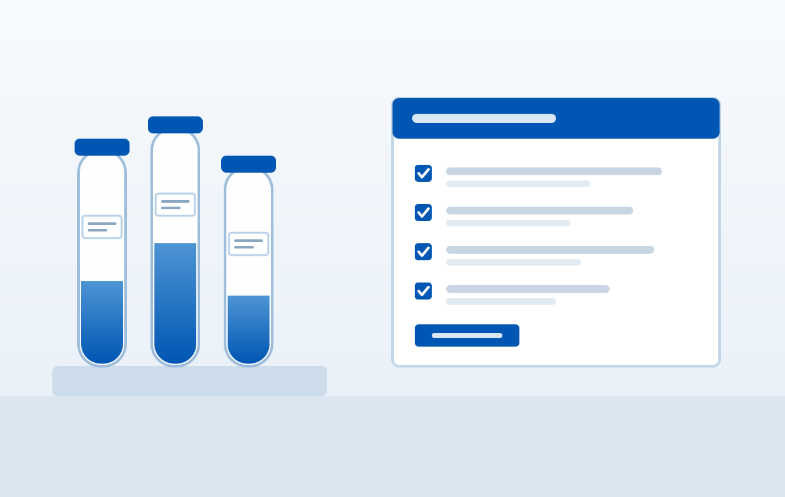

Our Clinical Services & Trials
We partner with major pharmaceutical sponsors including Sanofi and AstraZeneca to execute Phase II-IV clinical trials across multiple therapeutic areas.

Participant Audio Guide
Listen to our audio guide detailing participant rights, informed consent procedures, and safety measures during trials.